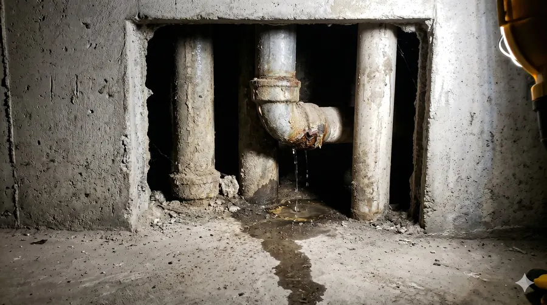
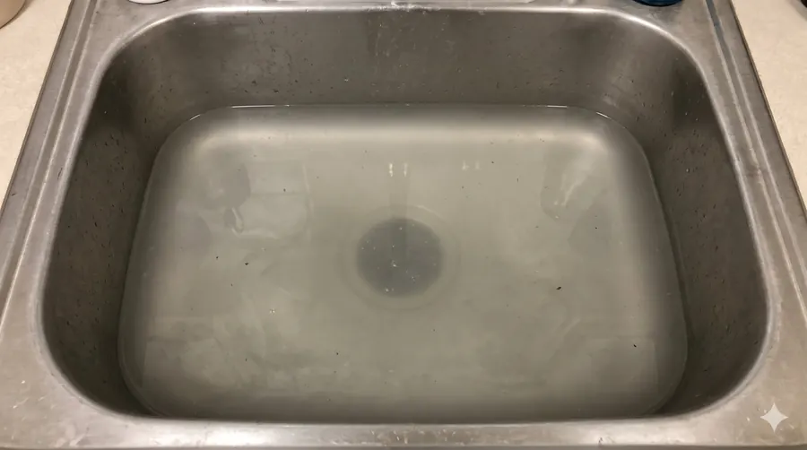
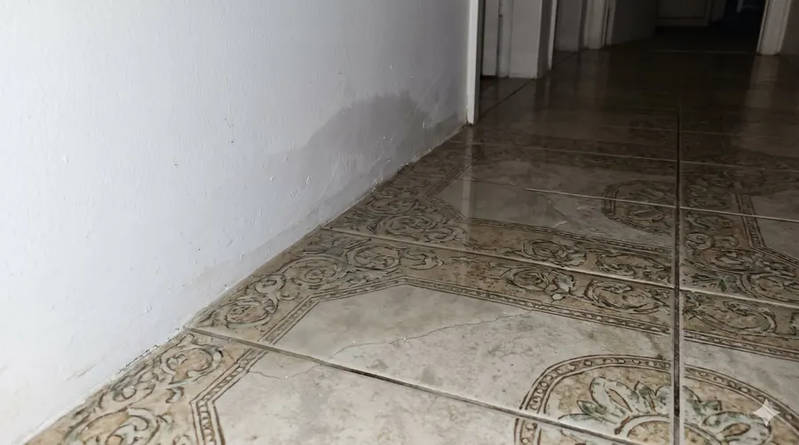
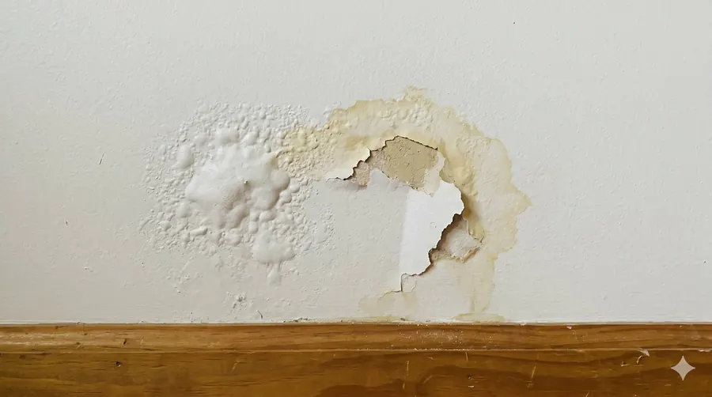

Alta Complejidad
Atasco Sanitario en Ducto Técnico
Fuga activa con óxido severo y acumulación de sedimentos en tuberías de hierro de edificio residencial de varios pisos. Diagnóstico en 45 min.
Detectamos obstrucciones, filtraciones y daños internos con evidencia visual (video + capturas). Entregamos informe técnico profesional y, si corresponde, ubicación del punto a intervenir + cotización clara para decidir con certeza.
Evita romper a ciegas. Con video inspección obtenemos evidencia y definimos el plan correcto antes de reparar.
Revisamos el interior de la tubería o ducto con cámaras de ultra alta definición. Detectamos la causa raíz con precisión milimétrica sin romper un solo centímetro a ciegas.
Documentación formal detallada con hallazgos visuales y plan de acción recomendado. Ideal para presentar a comunidades.
Proporcionamos presupuestos exactos de reparación basados en evidencia. Sin costos ocultos ni sorpresas en obra.
Menos demoliciones innecesarias, menos prueba y error, y una solución más rápida y certera.
"Gracias al uso de cámaras de alta definición y experiencia técnica."
 Con Cámara (Sin Daños)
Con Cámara (Sin Daños)
 Romper a Ciegas
Romper a Ciegas
Proceso pensado para ser rápido, documentado y sin pérdidas de tiempo en obra.
Nos envías ubicación, acceso (cámaras/shafts) y el problema. Confirmamos disponibilidad y comuna.
Recorrido interno con registro visual. Identificamos obstrucciones, quiebres, pendientes, intrusión de raíces u otros daños.
Entregamos evidencia (video/capturas) y ubicación sugerida del punto a intervenir. Si aplica, cotizamos reparación.
Evidencia visual de diagnósticos reales en Santiago. Así se ve el problema antes de saber exactamente cómo resolverlo.
Fuga activa con óxido severo y acumulación de sedimentos en tuberías de hierro de edificio residencial de varios pisos. Diagnóstico en 45 min.

Detección exacta en colector sanitario subterráneo sin necesidad de picar el piso completo.

Acumulación de grasa solidificada en ramal horizontal oculta bajo obra gruesa.

Ubicación milimétrica de fisura en tubería de agua fría bajo el piso cerámico.

Identificamos una conexión PPR mal sellada detrás de la estructura de yeso-cartón, ahorrando la demolición de todo el muro divisorio.
Casos reales de propietarios y administradores en Santiago que tomaron decisiones con evidencia.
"Llevaba meses con el mismo tapón. Me habían "destapado" tres veces sin resultado. Con la video inspección encontraron una conexión rota a 4 metros. Se reparó el punto exacto y no volvió a fallar jamás."
"Como administrador de edificio, necesitaba un informe técnico impecable para presentar a los copropietarios. El servicio fue sumamente profesional, con evidencia visual irrefutable. Aprobamos la reparación de inmediato sin contratiempos."
"Tenía una filtración misteriosa en el muro. Nadie sabía de dónde venía. La cámara detectó exactamente dónde estaba el problema. Evité romper todo el tabique decorativo de mi sala."
Todo lo que necesitas saber antes de coordinar tu inspección.
Incluye inspección con cámara profesional, registro visual del recorrido, diagnóstico y entrega de informe técnico. Si corresponde, cotización clara de reparación.
Obstrucciones, acumulación de residuos, fisuras, quiebres, deformaciones, conexiones defectuosas y otros daños internos.
Sí. Atendemos propietarios, administradores de edificios/condominios y constructoras o inmobiliarias en Santiago.
Sí. Inspeccionamos tuberías, ductos sanitarios y alcantarillado según el acceso disponible en el lugar.
Envíanos tu comuna/sector, el síntoma (tapón, filtración, mal olor, etc.) y tu urgencia. Con eso coordinamos visita y te orientamos el mejor paso.
Idealmente deja libre el acceso a rejillas, registros o tapas y comparte antecedentes del problema. Si hay urgencia o agua acumulada, indícalo por WhatsApp para preparar el enfoque correcto.
Se documenta con evidencia, se incluye en el informe y se recomienda el plan de acción. Si corresponde reparación, se entrega cotización clara y respaldada para decidir con certeza.
Atendemos Santiago y alrededores. Envíanos tu comuna por WhatsApp y confirmamos disponibilidad y tiempos de visita.
Sí. Según el acceso y condiciones, identificamos el tramo y ubicación del problema para reducir demoliciones y enfocar la reparación donde corresponde.
Sí, ofrecemos atención de urgencias el mismo día dependiendo de la disponibilidad y el horario de solicitud. Contáctanos por WhatsApp para coordinar rápidamente.
Cubrimos toda la Región Metropolitana de Santiago, además de la Quinta Región y la Sexta Región. Confirma tu ubicación por WhatsApp para asignar el equipo más cercano.
Sí. Trabajamos frecuentemente con administradores de edificios, condominios, constructoras e inmobiliarias, entregando diagnósticos formales para las comunidades.
El informe técnico profesional se envía en formato digital (PDF) con imágenes claras y videos (cuando sea necesario) evidenciando los hallazgos y nuestra recomendación experta.
Exactamente. Al usar cámaras de alta definición, podemos detectar el problema exacto y su ubicación, permitiendo intervenciones precisas y evitando demoliciones a ciegas.
Cuéntanos tu comuna y el síntoma (tapón, filtración, mal olor, etc.). Te orientamos a la brevedad y, si hace falta visita, coordinamos horario.